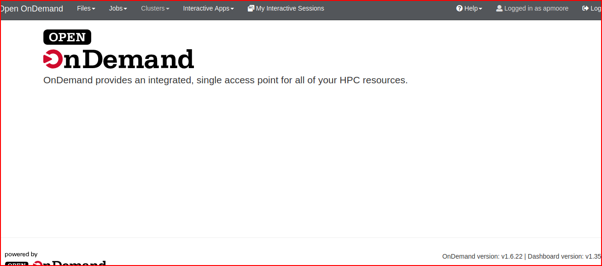
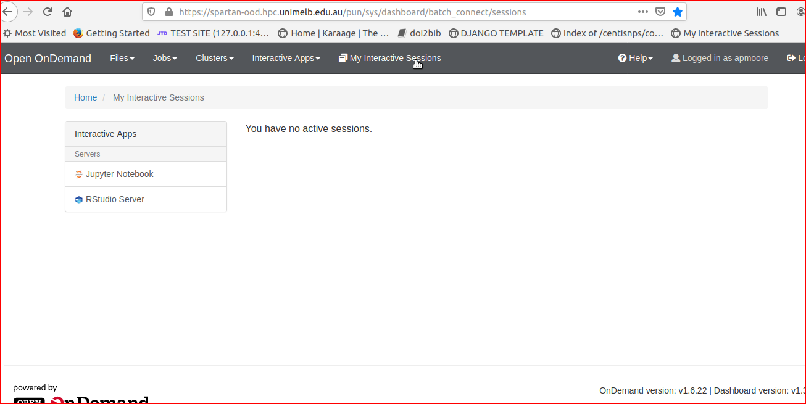
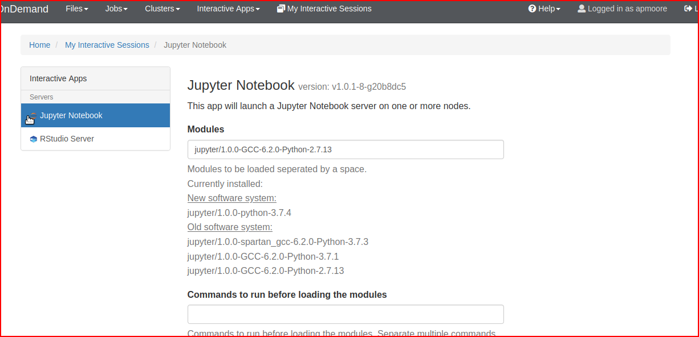
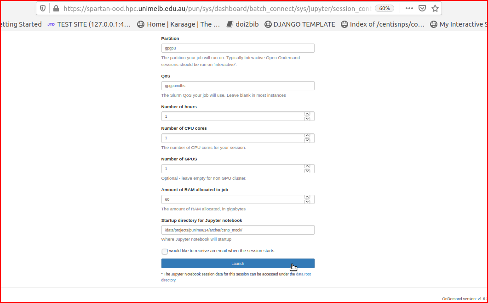
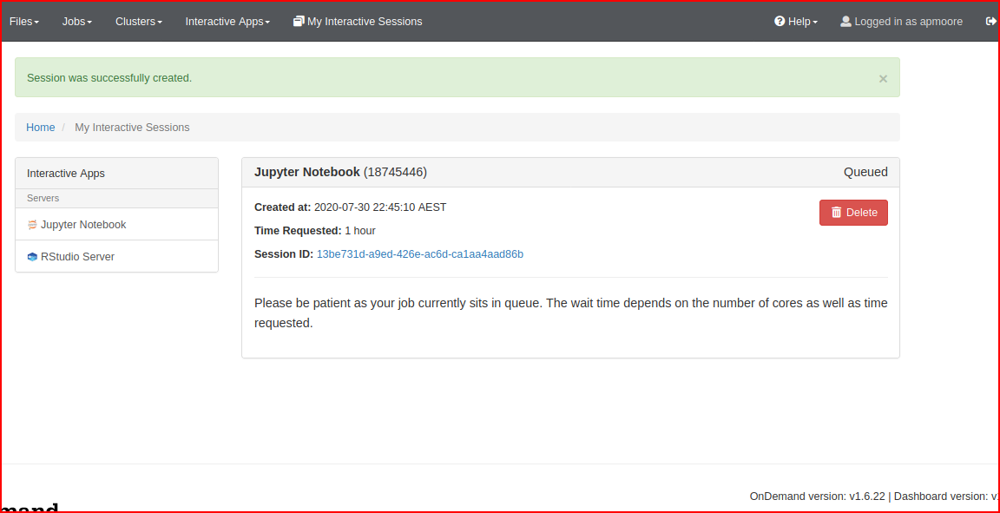

Starting interactive session
Go to Spartan on demand https://spartan-ood.hpc.unimelb.edu.au/pun/sys/dashboard

On Demand is a front-end to run jupyter notebook on the cluster
You will need to log in to your account.
Click on ‘my interactive sessions’ to go to this page:

Then click on ‘jupyter notebook’ to go to this page:

Then you need to fill out options in the fields like ‘Modules’, ‘Commands to run before loading the modules’ etc, keep going to the bottom of the page,
You link to your virtual environment (previous step) in the field ‘commands to run before jupyter’ - the virtual environment is sourced in the last command, ie ${HOME}/p27_jp/bin/activate
Once you have filled out options, click ‘launch’ button on bottom of page You will be taken to another page while you wait for session to start:


When session starts, you will be able to click on it to take you to the notebook.
This completes startup of notebook session. See options for fields below:
My field options:
Modules:
jupyter/1.0.0-GCC-6.2.0-Python-2.7.13
Commands to run before loading the modules:
Commands to run before Jupyter:
cd; module load Python/2.7.13-GCC-6.2.0; module load Tkinter/2.7.11-intel-2017.u2-Python-2.7.11; module load Python/2.7.13-GCC-6.2.0; module load Tensorflow/1.11.0-intel-2017.u2-Python-2.7.13-GPU; module load SAMtools/1.8-GCC-6.2.0-HTSlib-1.8; module load BEDTools/2.27.1-spartan_gcc-6.2.0; module load web_proxy; source ${HOME}/p27_jp/bin/activate;
Jupyter parameters:
Account:
punim0614
Partition:
gpgpu
QoS:
gpgpumdhs
Number of hours:
1
Number of CPU cores:
1
Number of GPUS:
1
Amount of RAM allocated to job:
60000
60GB ram was adequate for my tasks, 20GB was sometimes too small.
Startup directory for Jupyter notebook:
/data/projects/punim0614/archer/csnp_mock/
Misc notes:
For a different user, we may have to change QoS and account. The spartan sysadmin had to assign me a QoS so that I could access the gpgpu partition.
We start in /data/projects/punim0614/archer/csnp_mock/ because this is where all development code is stored.